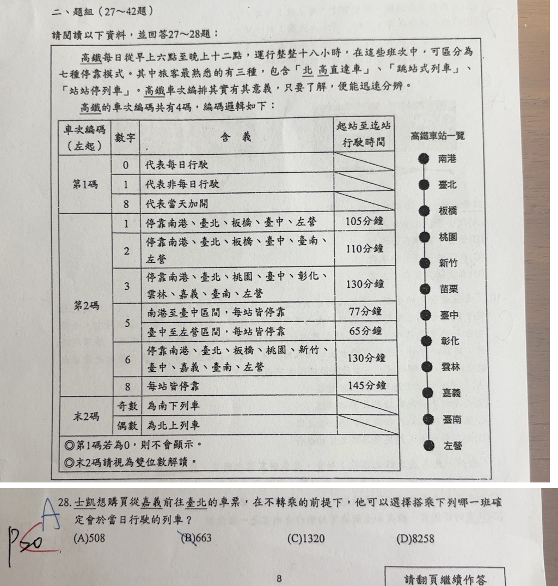

分享原卷｜第28題
完整原題
作答所需文章／材料
高鐵每日從早上六點至晚上十一點，運行整整十六小時，在這些班次中，可區分為七種停靠模式。其中旅客最熟悉的有三種，包含「北高直達車」、「跳站式列車」、「站站停列車」。高鐵車次編排其實有其意義，只要了解，便能迅速分辨。 高鐵的車次編碼共有4碼，編碼邏輯如下： ◎第1碼若為0，則不會顯示。 ◎末2碼請視為雙位數解讀。 高鐵車站一覽（由北至南）：南港、臺北、板橋、桃園、新竹、苗栗、臺中、彰化、雲林、嘉義、臺南、左營。| 車次編碼（左起） | 數字 | 含義 | 起站至迄站行駛時間 |
|---|---|---|---|
| 第1碼 | 0 | 代表每日行駛 | — |
| 第1碼 | 1 | 代表非每日行駛 | — |
| 第1碼 | 8 | 代表當天加開 | — |
| 第2碼 | 1 | 停靠南港、臺北、板橋、臺中、左營 | 105分鐘 |
| 第2碼 | 2 | 停靠南港、臺北、板橋、臺中、臺南、左營 | 110分鐘 |
| 第2碼 | 3 | 停靠南港、臺北、桃園、臺中、彰化、雲林、嘉義、臺南、左營 | 130分鐘 |
| 第2碼 | 5 | 南港至臺中區間，每站皆停靠 | 77分鐘 |
| 第2碼 | 5 | 臺中至左營區間，每站皆停靠 | 65分鐘 |
| 第2碼 | 6 | 停靠南港、臺北、板橋、桃園、新竹、臺中、嘉義、臺南、左營 | 130分鐘 |
| 第2碼 | 8 | 每站皆停靠 | 145分鐘 |
| 末2碼 | 奇數 | 為南下列車 | — |
| 末2碼 | 偶數 | 為北上列車 | — |
士凱想購買從嘉義前往臺北的車票，在不轉乘的前提下，他可以選擇搭乘下列哪一班確定會於當日行駛的列車？
(A) 508
(B) 663
(C) 1320
(D) 8258
先想一想，再查看答案、解說與原圖
原卷作答：原卷藍筆A；左側紅筆註記無法可靠辨識，不猜作另一個答案。
(C) 1320
逐項解析
| 選項與原句 | 判讀 | 句意與判斷理由 |
|---|---|---|
| (A) 508 | 不選 | 使用者已確認模式5為兩種不同區間班次，不跨臺中行駛；0508雖為每日北上，仍不能由嘉義直達臺北。 |
| (B) 663 | 不選 | 0663雖屬每日行駛且模式6停嘉義、臺北，但末兩碼63為奇數，是南下列車，方向相反。 |
| (C) 1320 | 應選 | 使用者確認答案C；模式3停嘉義、臺北，20為偶數表示北上。首碼1仍為非每日行駛，題幹當日是否開行缺少日期資訊的語句限制照實說明，不改原表。 |
| (D) 8258 | 不選 | 首碼8明示當天加開，不能說當日不一定有車；真正不符的是模式2沒有停嘉義。 |
詳細說明與解題步驟
依使用者核對，本題選C（1320）。使用者明確確認模式5的兩列代表不同區間班次，不跨臺中行駛；因此A（0508）不能讓旅客由嘉義直達臺北，不能沿用原AI選A的判斷。
1320末兩碼20為偶數，表示北上；第2碼3的模式停靠嘉義、臺北，符合方向、上下車站及不轉乘的條件。首碼1仍照原表表示「非每日行駛」，不能誤教成每天開行。原題又問「確定會於當日行駛」，但沒有提供日期；僅憑編碼不能另行證明該天一定開行。此處依使用者確認採C，並保留原題這項語句限制，不猜補日期或改寫原題。
A：0508屬北上且每日行駛，但模式5為不同區間車，不能跨臺中直達。B：0663的63為奇數，代表南下，方向相反。D：首碼8明示當天加開，當日開行沒有問題；真正不符的是模式2不停嘉義。
原材料「早上六點至晚上十一點，運行整整十六小時」照原印保留，六時至二十三時實為十七小時，不用這項時間筆誤推算車次。
核對註記：已實開真正上傳原卷及本題裁圖，逐題核對題幹、全部選項與必要閱讀材料。未提供實際考試日期，日期採首次使用者出題訊息的台灣日期；無教材冊章證據，歸綜合。 使用者已於monitor確認模式5分段為不同班、不跨臺中，答案C；已依確認處理，保留「確定當日」與非每日的語句限制，不重複要求確認。
原圖（僅本題）
